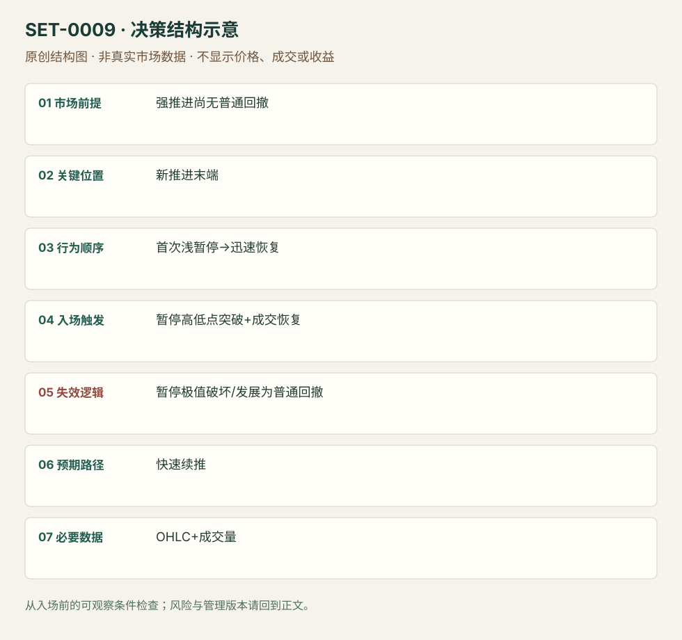

强推进后的首次微型回撤
First Micro Pullback After Strong Drive · SET-0009 · reviewed · v1.0.0
盈利证据：not_established。审查范围与来源版本见第13节；未知字段保留缺失原因。
1. 名称与快速概览
价格以连续方向推进、尚未出现普通回撤的方式快速离开基点；第一次短暂停顿未演变成常规回撤时，考虑顺向恢复。微回撤极值破坏即结束本次快速延续假说。
记录口径：PA core；必要数据 OHLC、volume。名称性质：编辑性描述名，英文保留来源术语以便检索。reviewed 只表示本条规则与证据记录审查通过，盈利状态为 not_established。
2. 本质与行为假说
关键是第一次休息和持续推进，而非小红柱的名称。来源把快速恢复解释为持续需求；K线只能证实推进与浅暂停。
3. 适用市场与环境
已有快速突破、连续趋势柱或很少回撤的微通道；前方有事前已知空间。AHPI来源是小盘动量股，并非所有ES微通道的成交条件。
来源实用市场：ES期货5分钟、AHPI美股10秒/1分钟。
Session：美股/ES现金参考段 09:30–16:00 America/New_York；收盘前平仓。期货夜盘单独建背景，不将其并入开盘区间。
跨市场：本版不主张已经验证的跨市场迁移；更换市场必须重定数据来源、流动性与session。
4. 出现前的观察清单
必要：新强推进、此前无普通回撤、暂停极浅且短。增强：突破区域未重叠、恢复成交增加。否决：多次深回撤后才出现小柱、直接撞入更高周期阻力。
5. 形成过程与状态转换
快速推进→首次浅暂停→未回收启动区→再次越暂停高点并恢复成交→管理；暂停发展成普通回撤时取消微型版本。
6. Entry trigger 与执行方式
Ross版不机械买第一根10秒柱新高，而等成交回到场内并突破暂停高点。Brooks日内例以首次回撤信号处理。二者分别保留，不将周期和条件拼成统一标准。
7. Invalidation 与止损逻辑
保护首次微回撤的低点/高点；Ross不希望持有等待它变成1分钟或5分钟普通回撤。若跨极值则本次快速恢复失效；跳价可能越过计划价格。
8. Exit、target 与 trade management
Ross以邻近半美元/整数位作首目标的具体股票版本；ES可用事前突破摆动或结构目标。快速失去推进时减仓，日内强势普通回撤的持仓模块须另行声明。
9. 常见 variations
10秒、1分钟、5分钟是观察尺度；空头镜像合并。没有暂停直接追涨不属于本条；从普通多段回撤进场归入SET-0006或0015。
10. 失败方式与不交易条件
正常亏损：首次浅暂停随后扩展。未成立：此前已经数次回撤。偏离：追涨成交太远或把紧止损不断放宽。小盘股停牌与点差会使微结构风险失真。
11. 与相近 setups 的区别
12. 图表与案例解读
已查看AHPI PDF页9：5分钟图说明大背景，1分钟与10秒图标出13:09附近新突破后的短暂停顿；10秒画面显示2021-07-13。作者讨论约10.75入场及10.21结构低点，但10.50只是心理止损替代，不能混用结果。其后到11.54的运动为回顾信息，并非事前确定目标。
- [VIS-000009] 来源PDF第9页图表；定位：PDF页序 9。AHPI三个周期展示首次微回撤；箭头后的走势属于回顾。 验证：chart_viewed_pdf_page。
本地原创示意（VIS-000066，非真实市场数据）：

小屏阅读可打开原尺寸示意图并缩放。

此图用于对照识别顺序与风险定义；不计入真实案例覆盖率。
视觉材料元数据与查看范围
- VIS-000009 · real_source_chart / structure_and_trigger / chart_viewed_pdf_page
品种：AHPI；日期：2021-07-13；周期：10秒/1分钟/5分钟；时区：America/New_York
作者示例；不是独立成交审计 - VIS-000066 · synthetic_structure_diagram / illustration_only / generated_not_market_evidence
品种：未知/不适用；日期：未知/不适用；周期：未知/不适用；时区：未知/不适用
无真实品种、日期或价格：这是结构示意
13. 证据、分歧与未知项
两族提供各自执行版本，不构成同一股票规则盈利复现。Brooks评论指出长微通道不是多段楔形；记录脚注让使用者复核计数。
14. 可用于复盘的检查表
- ☐ 下单前的前提可核对：强推进尚无普通回撤
- ☐ 事前标记位置：新推进末端
- ☐ 行为按顺序出现：首次浅暂停→迅速恢复
- ☐ 实际触发符合选定版本：暂停高低点突破+成交恢复
- ☐ 事先写明本次否定条件：暂停极值破坏/发展为普通回撤
- ☐ 目标/路径只用当时已知信息：快速续推
- ☐ 数据满足 OHLC+成交量；记录时间、点差、滑点、队列和未成交
- ☐ 记录截止平仓及规则偏离；正常亏损不事后改成“未成立”
15. 后续验证问题
先定义何为普通回撤，避免用持续时间事后分组；测试短暂停顿订单滑点、停牌与未成交率。
双向相关导航
- SET-0006 趋势中的两段回撤第二次入场 微通道第一次回撤之前没有正常回撤；本条必须已有第一次恢复失败。
- SET-0015 缩量普通回撤后的成交恢复 缩量多柱回撤已经有普通反向摆动，本条只处理强推进的第一次短暂停顿。
- SET-0014 趋势第一次反向冲击后的首回撤 微回撤需要未有普通回撤的强推进，但不要求之前的旧趋势被打断。
- SET-0021 盘前高点的开盘动量突破 0009 是已发生强驱动后的第一微回调，本条须穿越盘前边界。